- Introduction
- What is HTML
- Semantics
- Structure of an HTML Page
- HTML
- Document Metadata
- Scripting
- Sections
- Grouping Content
- Text-Level Semantics
- Links
- Embedded Content
- Tabular Data
- Forms

<!DOCTYPE html public "-//w3c//dtd html 4.01//en"
"http://www.w3.org/TR/html4/strict.dtd">
<html>
<head>
<title>My first HTML document</title>
</head>
<body>
<p>Hello world! </p>
</body>
</html>
- Attributes provide additional information about the HTML elements
- They are part of the start tag and comprise of name-value pairs
- Attribute names are always case-insensitive.
- Attribute values are generally case-insensitive and are always enclosed in quotes
- If the value contains double quotes then it is imperative to use single quote for the value
<!DOCTYPE html public "-//w3c//dtd html 4.01//en" "http://www.w3.org/tr/html4/strict.dtd">
<html>
<head>
<title>My first HTML document</title>
</head>
<body>
<p id=“1001” align=‘left’> Hello world! </p>
</body>
</html>
.... <BODY> <p>Hello world! </p> </BODY> </HTML>
<BODY> <hr width="50"> <p><b><i>Paragraph1</i></b> </p> <hr> </BODY>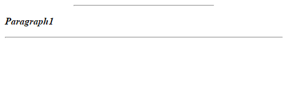
- If you want to display some content using:
- complete width available (use a BLOCK Elemtnt)
- only the required width (use an INLINE Element)
- Consequently,
- BLOCK elements always appear on a new line
- INLINE elements continue in the same line (unless space is not available)
- Block Elements can contain:
- Other BLOCK Elements,
- INLINE Elements can ONLY contain other INLINE elements
<body>
<p style="background-color:yellow"> Paragraph1 </p>
<table border="1">
<tr>
<td> <h1>This is Block1</h1> <h1>This is Block2</h1> </td>
<td> <strong>Inline Text1</strong><i>Inline Text2</i> </td>
</tr>
</table>
<i style="background-color:yellow">Inline Text2 with color</i>
</body>
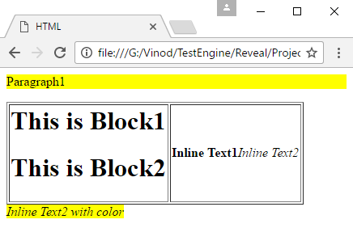
<BODY> <hr width="50"> <!– This comment won’t be shown on the browser --> <p><b><i>Paragraph1</i></b> </p> <hr> </BODY>
- HTML is case insensitive with some exceptions
- The values of IDs, classes, element names, attribute names, and attribute values may be handled as case-sensitive.
- According to the practice, we follow lower case for HTML tags.
- SEMANTICS = MEANINGS.
- Elements, attributes, and attribute values in HTML all have specific semantics.
- HTML documents can be presented in many different ways
- With a web browser on a desktop PC.
- With a tablet device, such as an iPad
- For a screen reader for someone who is visually impaired
- HTML can present content on many different types of devices because the markup conveys they meaning of the content, not how it should be displayed
- An HTML webpage is made up of three main parts:
- Document Type Declaration (<!DOCTYPE html>)
- A single tag which contains information about the markup language used in the document
- The HTML5 Doctype Declaration is simply <!DOCTYPE html>
- Header (<head>)
- Contains information about the web page
- Body (<body>)
- Contains the content for the web page
- The head element represents a colletion of metadata for the Document.
- The head element includes the following elements:
- title
- meta
- link
- style
The following code demonstrates a use of each f the elements mentioned above.
- Title
- The title element represents the document's title or name.
- Authors should use titles that identify their documents even when they are used out of context, for example in a user's history or bookmarks, or in search results.
- The documents's title is often different from its first heading, since the first heading does not have to stand alone when taken out of context.
- There must be no more than one title element per document.
- In the code snippet given in the previous slide, “Document Metadata Illustration” is the title of the page.
- The above image shows the html document in the previous page being rendered on a browser.

- Meta
- Meta tags are doat tags that tell browsers (or other services, such as search engines) information about the HTML document.
- They are not displayed, but they are parsed by browsers
- There are several different types of meta elements, and they are specified by using the name/content attributes, the charset attribute, or the http-equiv attribute.
- The following are just a few examples of how meta elements are used.
- Character encoding
<meta charset="utf-8">
- Use UTF-8 encode your files, and declare it by using the above meta tag (in HTML5) right after your <head> -tag
- Character encoding affects the range of characters you can use in your document. Standard letters in English are't an issue, but special characters or characters in other languages may be more of a concern.
- This encoding inforation should also be sent by your wb server.
- Link
- <link rel="stylesheet" href="style-original.css" type="text/css" />
- This is the most frequently used link relation and it is used for pointing to CSS rules that are tored in a separate file.
- CSS being the only style sheet language for the we, so from HTML5 we can omit type attribute of the link tag.
- Style
CSS files should always be included in the HEAD of the document. This is important from a performance perspective. This is especially important when you consider the perceived performance of a page. With the CSS rules in place before the body element is reached the browser is able to go about the important task of rendering your markup as early as possible. Best Practices
JS files should always be included near the END of a document. This is to maximize page performance. Keep the number of JS files to a minimum and avoid inline-JS (unless you know why it might be ok, don't do it). Best Practices
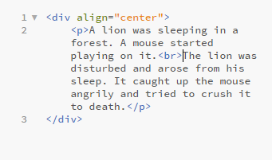 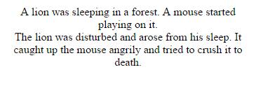
- Represents a block of preformatted text so that the formatting will be preserved.
- Use cases can be
- Including an e-mail, with paragraphs indicated by blank lines, lists indicated by lines prefixed with a bullet, and so on.
- Including fragments of computer code, with structure indicated according to the conventions of that language.
- The following shows a contemporary poem that uses the pre element to preserve its unusual formatting
- Lists group lists of information, and contain at least one list element.
- There are three types of lists in HTML:
- Unordered List (<ul>)
- An unordered list contains list elements where the order is not important. They are generally displayed with some type of bullet character.
- Ordered List (<ol>)
- An ordered list contains list elements where the order is important. They are generally numbered in some manner when displayed.
- Definition List (<dl>)
- A definition list generally contains term/definition pairs.
<ol>
<li>Red</li>
<li>Green</li>
<li>Blue</li>
<li>Yellow</li>
</ol>
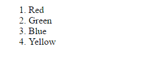
<ul>
<li>Red</li>
<li>Green</li>
<li>Blue</li>
<li>Yellow</li>
</ul>
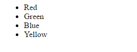
<dl> <dt>Red</dt> <dd>-Apple is red in color</dd> <dt>Green</dt> <dd>-Plants are green in color</dd> <dt>Blue</dt> <dd>-Sky looks blue in color</dd> <dt>Soup</dt> <dd>-Mango is yellow in color</dd> </dl>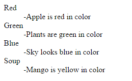
- The p element represents a paragraph.
<p>One day the lion was caught in a net spread by a hunter. It roared and tried to escape but in vain. The mouse<br> heared the lion's roaring and came there. </p>

<section> <p>Contact Us</p> <p>mail@example.com</p> </section>
<section> <footer> <p>Contact Us</p> <address>mail@example.com</address> </footer> </section>
- The strong element represents strong importance for its contents.
<p><strong>Node:</strong>This is important.</p>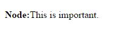
<span style="color:green; background-color:yellow;"> <h3>This is a Heading</h3> <p>This is a paragraph.</p> </span>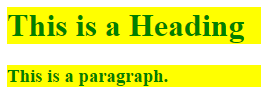 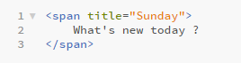
- The sup element represents a superscript
<Today is my 2<sup>nd</sup>marriage anniversary</p>
<p>The coordinate of the i<sup>th</sup>point is (x<sub>i</sub>, y<sub>i</sub>)</p>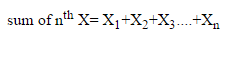

<a href=‘http://www.google.com’>Google</a>
- There are two ways to provie url to a link
- Absolute path url
- Relative path url
- Absolute path URL
- Used to point to a location on another domain. It typically uses the absolute path with domain name
<a href=‘http://www.google.com’>Google</a>
- Used to point to a location on current domain
<a href=‘current_director/anotherPage.html’>...</a>
- Intra page navigation is facilitated by bookmarks
- Also referred as "Named Anchor Tag"
<a href="#bookmark_desc">Description of bookmark</a>
<p name="bookmark_desc">Here comes the description of bookmark</p>
- img
- An img element represents an image.
- Important attributes are
- alt
- src
- The image given by the src attributes is the embedded content.
- The value of the alt attribute provides equivalent content for those who cannot process images or who have image loading disabled.
- The src attribute must be present, and must contain a valid non-empty URL potentially surrounded by spaces
- A single image can have different appropriate alternative text depending on the context.
- In each of the following cases, the same image is used, yet the alt text is different each time.
- caption
- The caption element represents the title of the table. A caption can introduce context for a table, making it significantly easier to understand.
- It is introduced as the first element child of a table element.
- “This is a 2-dimensional grid” is the caption.
- details
- We can add more information about the table in the caption using the details element.
- From the code snippet shown alongside we can observe, “Finding the Sum of the Monthly Savings and expenditure in the given table for a period of two months” is a more detailed caption.
- Summary
- The additional information provided by the details element can be summarized using summary element.
- In this example “Help” summarizes the details.
<caption> <strong>2-dimensional grid.</strong> <details> <summary>Summary</summary> <p>This is detail</p> </details> </caption>

- Text field defines one line input fields that a user can enter text into
<form> UserName:<input type="text"name="username"/><br/> Password:<input type="password" name="password"/> </form>
- “required” specifies that this field is mandatory
- “autofocus” makes an element as default focus when page is loaded .
UserName:<input type="text"name="username" autofocus required/><br/> Password:<input type="password" name="password"/> <input type="submit" name="">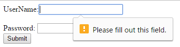
UserName:<input type="text"name="username" placeholder="Please enter your name" required/><br/> Password:<input type="password" name="password"/> <input type="submit" name="">

- Radio button allows one selection from a set of values
<form> UserName:<input type="radio" name="sex" value="male"/>male<br/> Password:<input type="radio" name="sex" value="female/> </form>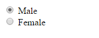
- Checkbox allows selection of more that one from a set of values
<form> UserName:<input type="checkbox" name="interests" value="Reading"/>Reading<br/> UserName:<input type="checkbox" name="interests" value="Playing"/>Playing<br/> UserName:<input type="checkbox" name="interests" value="Music"/>Music<br/> </form>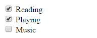
- Provides the default validation of email.
- Specified by setting the type attribute to "email"
- If browser does not support this feature then it defaults to text field
- Automatic email validation when form is submitted.
- Added in HTML5.
<input type="email"name="emailAddress"/><br/> <input type="submit" value="Submit">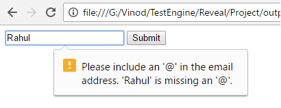
- Defines a slider control for number.
- Remaining attributes are same as those of number.
- If browser does not support this feature, it is rendered as text field.
- Added in HTML5.
<input type="range" min="0" max="100" step="10" value="50"/><br/> <input type="submit" value="Submit">
- Submit button is used to submit a form and send data from browser to a server.

https://www.flipkart.com/moto-e3-power-white-16-gb/itme?id=MOB&price=7999
https://angular.io/docs/ts/latest/api/router/index/Resolve-interface.html